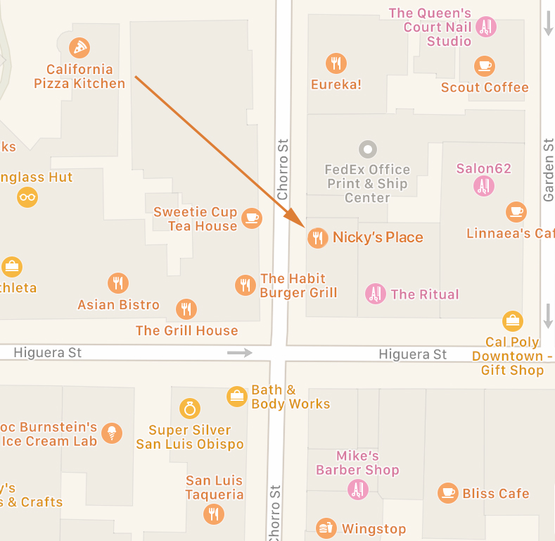

Location

Nicky's Place is located in the heart of beautiful Downtown San Luis Obispo, right off the side of Higuera Street. See the map above for reference, and stop on by soon!
Nicky's Place is located in the heart of beautiful Downtown San Luis Obispo, right off the side of Higuera Street. See the map above for reference, and stop on by soon!